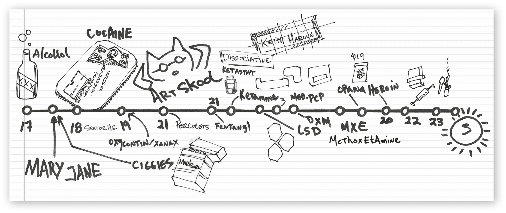

Phần I · Chương 1 — Cỗ máy tự kích thích của chúng ta
PHẦN I
Mưu Cầu Khoái Lạc
CHƯƠNG 1
Những Cỗ Máy Thủ Dâm Của Chúng Ta
Tôi bước ra phòng chờ để đón Jacob. Ấn tượng đầu tiên ư? Tốt bụng. Ông ấy ngoài sáu mươi tuổi một chút, vóc dáng trung bình, khuôn mặt hiền hậu nhưng vẫn điển trai . . . trông ông già đi một cách khá phong độ. Ông mặc bộ đồng phục chuẩn mực của Thung lũng Silicon: quần kaki và áo sơ mi cài nút giản dị. Trông ông rất bình thường. Không giống một người đang cất giữ bí mật.
Khi Jacob theo tôi đi qua mê cung ngắn của các hành lang, tôi có thể cảm nhận được sự lo lắng của ông tỏa ra như những cơn sóng vỗ vào lưng mình. Tôi nhớ lại thời mình từng hồi hộp mỗi khi dẫn bệnh nhân về phòng làm việc. Mình có đi nhanh quá không? Mình có đánh hông quá đà không? Mông mình trông có buồn cười không?
Chuyện đó giờ đã xa lắm rồi. Tôi thừa nhận mình là một phiên bản chai sạn hơn của chính mình ngày trước, điềm tĩnh hơn, có lẽ là thờ ơ hơn. Liệu ngày xưa khi biết ít hơn và cảm nhận nhiều hơn, tôi có phải là một bác sĩ giỏi hơn không?
Chúng tôi đến phòng làm việc của tôi và tôi đóng cửa lại sau lưng ông. Nhẹ nhàng, tôi mời ông ngồi vào một trong hai chiếc ghế bọc nệm màu xanh lá cây giống hệt nhau, cao bằng nhau, đặt cách nhau hai feet, đúng chuẩn phòng trị liệu. Ông ngồi xuống. Tôi cũng vậy. Ánh mắt ông lướt quanh căn phòng.
Phòng làm việc của tôi rộng mười nhân mười bốn feet, có hai cửa sổ, một chiếc bàn làm việc đặt máy tính, một chiếc tủ thấp chất đầy sách và một chiếc bàn trà nhỏ đặt giữa hai chiếc ghế. Bàn làm việc, tủ thấp và bàn trà đều làm bằng gỗ màu nâu đỏ đồng bộ. Chiếc bàn làm việc là đồ dùng lại từ vị trưởng khoa cũ của tôi. Mặt trong của nó bị nứt đôi ở chính giữa, nơi không ai khác có thể nhìn thấy—một phép ẩn dụ rất đắt cho công việc tôi làm.
Trên mặt bàn là mười xấp giấy riêng biệt, xếp thẳng tắp như một chiếc đàn accordion. Người ta bảo điều này tạo cảm giác về sự ngăn nắp và hiệu quả.
Đồ trang trí trên tường là một mớ hỗn tạp. Những tấm bằng cấp bắt buộc phải có, hầu hết chưa đóng khung. Vì lười. Một bức tranh vẽ con mèo tôi nhặt được trong thùng rác nhà hàng xóm—tôi lấy nó vì cái khung nhưng cuối cùng lại giữ lại vì con mèo. Một tấm thảm treo tường nhiều màu sắc vẽ cảnh trẻ em chơi đùa quanh những ngôi chùa, kỷ vật từ thời tôi đi dạy tiếng Anh ở Trung Quốc năm hai mươi tuổi. Tấm thảm có một vết ố cà phê, nhưng chỉ nhìn thấy được nếu bạn biết mình đang tìm gì, giống như bài kiểm tra Rorschach vậy.
Trưng bày trong phòng là đủ loại đồ lưu niệm lặt vặt, chủ yếu là quà tặng từ bệnh nhân và sinh viên. Có sách, thơ, tiểu luận, tác phẩm nghệ thuật, bưu thiếp, thiệp chúc mừng ngày lễ, thư tay, tranh biếm họa.
Một bệnh nhân, vốn là nghệ sĩ kiêm nhạc sĩ tài năng, đã tặng tôi bức ảnh anh chụp cầu Cổng Vàng có vẽ đè lên những nốt nhạc viết tay của mình. Khi làm bức ảnh đó, anh không còn ý định tự tử nữa, nhưng đó vẫn là một hình ảnh u sầu, toàn một màu xám và đen. Một bệnh nhân khác, một phụ nữ trẻ xinh đẹp luôn tự ti vì những nếp nhăn mà chỉ mình cô nhìn thấy và không lượng Botox nào xóa nổi, đã tặng tôi một chiếc bình nước bằng đất sét lớn đủ phục vụ mười người.
Bên trái máy tính, tôi đặt một bản in nhỏ bức tranh Melencolia 1 của Albrecht Dürer. Trong bức vẽ, Nỗi U Sầu được nhân cách hóa thành một người phụ nữ ngồi gù lưng trên ghế dài, vây quanh là những công cụ bị bỏ mặc của lao động và thời gian: một chiếc thước kẹp, một cái cân, một chiếc đồng hồ cát, một cái búa. Con chó đói lả của bà, xương sườn lộ rõ qua thân hình hóp lại, kiên nhẫn chờ đợi trong vô vọng mong bà tỉnh táo lại.
Bên phải máy tính là một bức tượng thiên thần bằng đất sét cao năm inch với đôi cánh làm bằng dây thép, hai tay giơ cao hướng lên bầu trời. Dưới chân tượng khắc chữ courage (lòng can đảm). Đây là món quà từ một đồng nghiệp khi cô ấy dọn dẹp văn phòng. Một thiên thần bị bỏ lại. Tôi xin nhận.
Tôi biết ơn căn phòng riêng này của mình. Ở đây, tôi như lơ lửng ngoài dòng thời gian, tồn tại trong một thế giới của những bí mật và giấc mơ. Nhưng không gian này cũng nhuốm màu buồn bã và nuối tiếc. Khi bệnh nhân kết thúc điều trị với tôi, quy chuẩn đạo đức nghề nghiệp nghiêm cấm tôi liên lạc lại với họ.
Mối quan hệ của chúng tôi dù chân thực đến đâu bên trong căn phòng này, nó cũng không thể tồn tại bên ngoài không gian ấy. Nếu tình cờ gặp bệnh nhân ở cửa hàng tạp hóa, tôi thậm chí còn ngần ngại không dám chào hỏi, vì sợ mình tự bộc lộ bản thân cũng là một con người với những nhu cầu riêng. Cái gì cơ, tôi cũng ăn uống sao?
Nhiều năm trước, khi đang trong thời gian nội trú chuyên ngành tâm thần, lần đầu tiên tôi nhìn thấy người hướng dẫn trị liệu tâm lý của mình ở bên ngoài phòng làm việc. Ông bước ra từ một cửa hàng, mặc áo khoác dài và đội chiếc mũ phớt kiểu Indiana Jones. Trông ông cứ như vừa bước ra từ trang bìa tạp chí thời trang J. Peterman. Trải nghiệm đó thật khiến người ta hụt hẫng.
Tôi từng chia sẻ rất nhiều chi tiết thầm kín trong đời mình với ông, và ông đã tư vấn cho tôi như với một bệnh nhân. Tôi chưa bao giờ nghĩ ông là người thích đội mũ. Với tôi, điều đó gợi lên sự bận tâm đến vẻ bề ngoài, hoàn toàn trái ngược với hình ảnh lý tưởng hóa tôi dành cho ông. Nhưng trên hết, nó khiến tôi nhận ra bệnh nhân của mình có thể cảm thấy bối rối thế nào khi bắt gặp tôi bên ngoài phòng làm việc.
Tôi quay sang Jacob và bắt đầu. “Tôi có thể giúp gì cho ông?”
Những câu mở đầu khác mà tôi đã đúc kết theo thời gian bao gồm: “Hãy kể cho tôi nghe vì sao bạn đến đây,” “Hôm nay điều gì đưa bạn tới đây?” và thậm chí là “Hãy bắt đầu từ điểm khởi đầu, bất kể đó là đâu đối với bạn.”
Jacob nhìn tôi dò xét. “Tôi đã hy vọng,” ông nói với giọng Đông Âu đặc sệt, “bác sĩ sẽ là một người đàn ông.”
Lúc đó tôi biết ngay chúng tôi sắp nói về chuyện tình dục.
“Tại sao vậy?” tôi hỏi, giả vờ như không biết.
“Vì có thể sẽ khó cho cô, một người phụ nữ, khi phải nghe về những vấn đề của tôi.”
“Tôi có thể đảm bảo với ông rằng tôi đã nghe gần như mọi chuyện trên đời rồi.”
“Cô thấy đấy,” ông ngập ngừng, nhìn tôi đầy ngượng ngùng, “tôi mắc chứng nghiện tình dục.”
Tôi gật đầu và ngả người vào ghế. “Ông cứ nói tiếp đi . . .”
Mỗi bệnh nhân là một gói quà chưa mở, một cuốn tiểu thuyết chưa đọc, một vùng đất chưa được khám phá. Một bệnh nhân từng mô tả cho tôi cảm giác khi leo núi đá: Khi anh ta ở trên vách đá, chẳng có gì tồn tại ngoài bề mặt đá vô tận đối lập với quyết định hữu hạn xem tiếp theo phải đặt từng ngón tay, ngón chân vào đâu. Thực hành trị liệu tâm lý cũng không khác gì leo núi đá. Tôi đắm mình vào câu chuyện, vào việc kể và kể lại, và mọi thứ khác đều tan biến.
Tôi đã nghe rất nhiều biến thể của những câu chuyện về nỗi đau khổ của con người, nhưng câu chuyện của Jacob khiến tôi bàng hoàng. Điều làm tôi bất an nhất là những gì nó ngụ ý về thế giới chúng ta đang sống hiện nay, thế giới mà chúng ta đang để lại cho con cái mình.
Jacob đi thẳng vào một ký ức thời thơ ấu. Không hề mào đầu. Freud hẳn sẽ tự hào lắm.
“Tôi thủ dâm lần đầu tiên khi lên hai hoặc ba tuổi,” ông nói. Ký ức ấy vẫn còn sống động đối với ông. Tôi có thể thấy điều đó trên khuôn mặt ông.
“Tôi đang ở trên mặt trăng,” ông kể tiếp, “nhưng không hẳn là mặt trăng thật. Có một người ở đó giống như một vị thần . . . và tôi có một trải nghiệm tình dục mà tôi không nhận thức rõ . . .”
Tôi hiểu mặt trăng theo nghĩa giống như vực thẳm, vừa chẳng ở đâu cả lại vừa ở khắp mọi nơi cùng một lúc. Nhưng còn Chúa thì sao? Chẳng phải tất cả chúng ta đều khao khát một điều gì đó vượt lên trên bản thân mình hay sao?
Khi còn là cậu học trò nhỏ, Jacob là một kẻ mộng mơ: cài cúc áo lệch hàng, phấn dính đầy tay và tay áo, luôn là người đầu tiên nhìn ra ngoài cửa sổ trong giờ học và là người cuối cùng rời lớp vào cuối ngày. Đến năm tám tuổi, ông đã thủ dâm thường xuyên. Đôi khi một mình, đôi khi cùng cậu bạn thân nhất. Họ vẫn chưa học được cách phải cảm thấy xấu hổ.
Nhưng sau Lễ Rước Lễ Lần Đầu, ông mới ý thức được rằng thủ dâm là một “tội trọng”. Từ đó trở đi, ông chỉ thủ dâm một mình, và thứ Sáu hàng tuần đều đến gặp vị linh mục Công giáo tại nhà thờ địa phương của gia đình để xưng tội.
“Con thủ dâm,” ông thì thầm qua ô cửa lưới của tòa giải tội.
“Mấy lần?” vị linh mục hỏi.
“Mỗi ngày ạ.”
Một khoảng lặng. “Đừng làm thế nữa.”
Jacob ngừng nói và nhìn tôi. Chúng tôi trao nhau một nụ cười thấu hiểu nho nhỏ. Nếu những lời khuyên răn thẳng thừng như vậy mà giải quyết được vấn đề, chắc tôi đã thất nghiệp từ lâu.
Cậu bé Jacob quyết tâm vâng lời, để trở thành “con ngoan”, vì thế cậu nắm chặt tay và không chạm vào chỗ đó nữa. Nhưng quyết tâm của cậu chỉ kéo dài được hai hoặc ba ngày.
“Đó,” ông nói, “là sự khởi đầu cho cuộc sống hai mặt của tôi.”
Thuật ngữ cuộc sống hai mặt (double life) quen thuộc với tôi cũng như đoạn ST chênh lên đối với bác sĩ tim mạch, giai đoạn IV đối với bác sĩ ung bướu, và hemoglobin A1C đối với bác sĩ nội tiết. Nó chỉ việc người nghiện lén lút sử dụng ma túy, rượu bia hoặc thực hiện các hành vi cưỡng chế khác, giấu kín khỏi tầm mắt mọi người, thậm chí trong một số trường hợp là giấu khỏi chính nhận thức của bản thân họ.
Suốt những năm thiếu niên, Jacob đi học về là lên gác mái, và thủ dâm trước bức vẽ nữ thần Hy Lạp Aphrodite mà ông đã chép lại từ sách giáo khoa rồi giấu dưới khe ván sàn gỗ. Sau này nhìn lại, ông coi giai đoạn đó của đời mình là một thời kỳ ngây thơ.
Năm mười tám tuổi, ông chuyển lên thành phố sống cùng chị gái để theo học ngành vật lý và kỹ thuật tại trường đại học. Chị gái ông đi làm suốt cả ngày, và lần đầu tiên trong đời, ông ở một mình trong những khoảng thời gian dài. Ông thấy cô đơn.
“Vì vậy tôi quyết định chế tạo một cỗ máy . . .”
“Một cỗ máy ư?” tôi hỏi, ngồi thẳng lưng lên một chút.
“Một cỗ máy thủ dâm.”
Tôi ngập ngừng. “Tôi hiểu rồi. Nó hoạt động thế nào?”
“Tôi nối một thanh kim loại vào máy quay đĩa hát. Đầu còn lại tôi nối với một cuộn lò xo kim loại hở, rồi quấn vải mềm xung quanh.” Ông vẽ một bức hình để minh họa cho tôi xem.
“Tôi đặt miếng vải và cuộn lò xo quanh dương vật (penis) của mình,” ông nói, phát âm từ penis như thể nó là hai từ: pen như cây bút viết, và ness như quái vật hồ Loch Ness.
Tôi suýt bật cười nhưng, sau một thoáng suy nghĩ, tôi nhận ra cơn buồn cười đó chỉ là vỏ bọc cho một cảm xúc khác: Tôi đang sợ. Sợ rằng sau khi mời gọi ông bộc lộ bản thân với mình, tôi sẽ không thể giúp được ông.
“Khi đĩa hát quay vòng tròn,” ông nói, “cuộn lò xo di chuyển lên xuống. Tôi điều chỉnh tốc độ của cuộn lò xo bằng cách chỉnh tốc độ máy quay đĩa. Tôi có ba mức tốc độ khác nhau. Bằng cách này, tôi tự đưa mình lên đến bờ vực . . . rất nhiều lần, mà không vượt qua giới hạn. Tôi cũng phát hiện ra rằng vừa làm vừa hút thuốc lá giúp kéo mình lùi lại khỏi bờ vực, nên tôi dùng mẹo này.”
Thông qua phương pháp vi điều chỉnh này, Jacob có thể duy trì trạng thái tiền cực khoái suốt nhiều giờ liền. “Cái này,” ông vừa nói vừa gật đầu, “rất gây nghiện.”
Jacob thủ dâm vài giờ mỗi ngày bằng cỗ máy của mình. Khoái cảm đối với ông là vô song. Ông thề sẽ dừng lại. Ông giấu cỗ máy lên tít trên cao trong tủ quần áo hoặc tháo rời hoàn toàn rồi vứt các bộ phận đi. Nhưng chỉ một hai ngày sau, ông lại lôi các bộ phận từ trên tủ xuống hoặc móc từ thùng rác ra, lắp ráp lại và bắt đầu tiếp.
Có lẽ bạn cảm thấy ghê tởm cỗ máy thủ dâm của Jacob, giống như tôi khi lần đầu nghe kể về nó. Có lẽ bạn coi đó là một dạng biến thái cực đoan nằm ngoài trải nghiệm thường nhật, chẳng có chút liên quan gì đến bạn và cuộc sống của bạn.
Nhưng nếu làm thế, cả bạn và tôi, chúng ta sẽ bỏ lỡ cơ hội nhận ra một điều cốt lõi về cách chúng ta đang sống hiện nay: Tất cả chúng ta, theo một cách nào đó, đều đang gắn bó với những cỗ máy thủ dâm của riêng mình.
Khoảng năm bốn mươi tuổi, tôi nảy sinh một sự gắn bó thiếu lành mạnh với tiểu thuyết lãng mạn. Chạng Vạng (Twilight), một cuốn tiểu thuyết lãng mạn huyền bí về ma cà rồng tuổi teen, chính là “chất gây nghiện cửa ngõ” của tôi. Tôi thấy xấu hổ khi đọc nó, chứ đừng nói đến việc thừa nhận mình bị nó mê hoặc.
Chạng Vạng đánh trúng điểm ngọt giữa chuyện tình cảm, trinh thám và giả tưởng—một lối thoát hoàn hảo khi tôi vừa bước qua khúc quanh tuổi trung niên. Không chỉ có mình tôi. Hàng triệu phụ nữ ở độ tuổi của tôi cũng đang đọc và phát cuồng vì Chạng Vạng. Bản thân việc tôi bị cuốn vào một cuốn sách chẳng có gì bất thường. Tôi vốn là người mê đọc sách cả đời. Điều khác biệt là những gì xảy ra tiếp theo. Một thứ mà tôi không thể lý giải dựa trên sở thích trước đây hay hoàn cảnh sống hiện tại.
Khi đọc xong Chạng Vạng, tôi ngấu nghiến mọi cuốn tiểu thuyết lãng mạn về ma cà rồng mà mình có thể kiếm được, rồi chuyển sang người sói, tiên nữ, phù thủy, thầy gọi hồn, người du hành thời gian, nhà tiên tri, người đọc suy nghĩ, kẻ điều khiển lửa, thầy bói, thợ chế tác ngọc . . . đại loại thế. Đến một lúc nào đó, những câu chuyện tình nhẹ nhàng không còn thỏa mãn được tôi nữa, thế là tôi tìm kiếm những phiên bản miêu tả trần trụi và khiêu dâm hơn của mô-típ chàng gặp nàng kinh điển.
Tôi nhớ mình từng sốc thế nào khi thấy việc tìm những cảnh sex nóng bỏng ngay trên kệ sách tiểu thuyết phổ thông ở thư viện khu phố lại dễ dàng đến thế. Tôi lo lắng vì lũ trẻ nhà mình có thể tiếp cận những cuốn sách này. Cuốn sách táo bạo nhất ở thư viện địa phương thời tôi lớn lên ở vùng Trung Tây chỉ là Chúa Ơi, Con Là Margaret Đây (Are You There, God? It’s Me, Margaret).
Mọi chuyện leo thang khi theo lời thúc giục của một người bạn rành công nghệ hơn, tôi tậu một chiếc máy đọc sách Kindle. Không còn phải chờ sách chuyển từ chi nhánh thư viện khác về hay phải giấu những bìa sách nóng bỏng sau các tập san y khoa, nhất là khi có chồng và các con ở bên cạnh. Giờ đây, chỉ với hai cú vuốt và một cú nhấp, tôi có ngay bất kỳ cuốn sách nào mình muốn, mọi lúc, mọi nơi: trên tàu hỏa, trên máy bay, lúc chờ cắt tóc. Tôi có thể dễ dàng ngụy trang cuốn Darkfever của Karen Marie Moning thành cuốn Tội Ác Và Hình Phạt của Dostoyevsky.
Nói ngắn gọn, tôi trở thành một kẻ đọc liên hoàn các tiểu thuyết khiêu dâm viết theo công thức. Vừa đọc xong một cuốn sách điện tử, tôi chuyển ngay sang cuốn tiếp theo: đọc thay vì giao lưu, đọc thay vì nấu ăn, đọc thay vì ngủ, đọc thay vì dành sự chú ý cho chồng và các con. Có một lần, tôi xấu hổ phải thú nhận rằng, tôi đã mang Kindle đến chỗ làm và đọc tranh thủ giữa các ca khám bệnh nhân.
Tôi tìm kiếm những lựa chọn ngày càng rẻ hơn, cho đến tận mức miễn phí. Amazon, giống như bất kỳ tay buôn ma túy giỏi nào, hiểu rất rõ giá trị của một mẫu dùng thử miễn phí. Thi thoảng tôi cũng tìm được một cuốn sách thực sự chất lượng mà lại tình cờ có giá rẻ; nhưng phần lớn thời gian, chúng thực sự tệ hại, dựa dẫm vào những mô-típ cũ rích và các nhân vật vô hồn, đầy rẫy lỗi đánh máy và sai ngữ pháp. Nhưng tôi vẫn đọc ngấu nghiến vì tôi ngày càng tìm kiếm một loại trải nghiệm rất cụ thể. Làm thế nào để đạt được nó ngày càng ít quan trọng hơn.
Tôi muốn đắm chìm trong khoảnh khắc căng thẳng tình dục dâng trào và cuối cùng được giải tỏa khi nam chính và nữ chính lao vào nhau. Tôi không còn quan tâm đến cú pháp, văn phong, bối cảnh hay nhân vật nữa. Tôi chỉ muốn “liều thuốc” của mình, và những cuốn sách này, được viết theo một công thức có sẵn, được thiết kế để gài bẫy tôi.
Chương nào cũng kết thúc ở đoạn hồi hộp, và bản thân các chương dồn nén dần về phía cao trào. Tôi bắt đầu đọc lướt thật nhanh phần đầu cuốn sách cho đến khi tới đoạn cao trào và chẳng thèm đọc phần còn lại sau khi xong xuôi. Giờ đây tôi buồn bã sở hữu một kiến thức rằng nếu bạn mở bất kỳ cuốn tiểu thuyết lãng mạn nào ở khoảng ba phần tư cuốn sách, bạn có thể đi thẳng vào vấn đề.
Khoảng một năm sau khi mắc chứng nghiện tiểu thuyết lãng mạn mới mẻ này, tôi thấy mình thức đến 2 giờ sáng một ngày giữa tuần để đọc Năm Mươi Sắc Thái (Fifty Shades of Grey). Tôi tự hợp lý hóa rằng đó chỉ là phiên bản hiện đại của Kiêu Hãnh Và Định Kiến—cho đến tận khi tôi đọc đến trang viết về “nút bịt hậu môn” và chợt lóe lên nhận thức rằng việc đọc về đồ chơi tình dục bạo dâm lúc nửa đêm về sáng không phải là cách tôi muốn sử dụng thời gian của mình.
Nghiện được định nghĩa một cách rộng rãi là việc tiếp tục tiêu thụ một cách cưỡng chế một chất hoặc một hành vi (cờ bạc, chơi game, tình dục) bất chấp tác hại đối với bản thân và/hoặc người khác.
Những gì xảy ra với tôi thật nhỏ nhặt nếu so với cuộc đời của những người mắc chứng nghiện nặng nề, nhưng nó nói lên vấn đề tiêu thụ quá mức mang tính cưỡng chế đang ngày càng gia tăng mà tất cả chúng ta đều phải đối mặt ngày nay, ngay cả khi cuộc sống của chúng ta đang rất tốt đẹp. Tôi có một người chồng tử tế và yêu thương mình, những đứa con tuyệt vời, công việc ý nghĩa, tự do, quyền tự chủ và sự sung túc tương đối—không sang chấn tâm lý, không đứt gãy xã hội, không nghèo đói, không thất nghiệp, hay các yếu tố nguy cơ gây nghiện khác. Ấy vậy mà tôi vẫn thu mình ngày càng sâu hơn một cách cưỡng chế vào một thế giới giả tưởng.
Mặt Tối Của Chủ Nghĩa Tư Bản
Năm hai mươi ba tuổi, Jacob gặp và kết hôn với vợ mình. Họ dọn vào ở chung trong căn hộ ba phòng cùng bố mẹ vợ, và ông bỏ lại cỗ máy của mình ở phía sau—mãi mãi, ông đã hy vọng như vậy. Ông và vợ đăng ký xin cấp một căn hộ riêng nhưng được thông báo phải chờ hai mươi lăm năm. Điều này là chuyện bình thường vào những năm 1980 tại quốc gia Đông Âu nơi họ sinh sống.
Thay vì chấp nhận cảnh sống chung với bố mẹ vợ suốt hàng thập kỷ, họ quyết định kiếm thêm thu nhập tay trái để sớm mua được chỗ ở riêng. Họ mở một doanh nghiệp máy tính nhập khẩu máy từ Đài Loan, gia nhập vào nền kinh tế ngầm đang phát triển.
Công việc kinh doanh phát đạt, và họ nhanh chóng trở nên giàu có theo tiêu chuẩn địa phương. Họ mua được nhà và đất. Họ có hai người con, một trai và một gái.
Con đường thăng tiến của họ dường như được đảm bảo khi Jacob nhận được lời mời làm việc với tư cách nhà khoa học tại Đức. Họ chớp lấy cơ hội chuyển sang phương Tây, phát triển sự nghiệp của ông và mang lại cho các con mọi cơ hội mà Tây Âu có thể trao tặng. Cuộc di cư quả thực mang lại nhiều cơ hội, nhưng không phải cơ hội nào cũng tốt đẹp.
“Khi chuyển đến Đức, tôi khám phá ra phim khiêu dâm, rạp chiếu phim sex (porn-kino), các buổi diễn trực tiếp. Thị trấn tôi sống nổi tiếng về mấy thứ này, và tôi không thể cưỡng lại. Nhưng tôi vẫn xoay xở được. Tôi kiểm soát được trong suốt mười năm. Tôi làm việc như một nhà khoa học, làm việc rất chăm chỉ, nhưng vào năm 1995, mọi thứ thay đổi.”
“Điều gì đã thay đổi?” tôi hỏi, dù đã đoán được câu trả lời.
“Internet. Năm đó tôi bốn mươi hai tuổi, mọi thứ vẫn ổn, nhưng với sự xuất hiện của Internet, cuộc đời tôi bắt đầu sụp đổ. Một lần vào năm 1999, tôi ở trong chính căn phòng khách sạn mà mình từng ở chắc phải năm mươi lần trước đó. Ngày hôm sau tôi có một hội nghị lớn, một bài phát biểu quan trọng. Nhưng tôi thức trắng cả đêm xem phim khiêu dâm thay vì chuẩn bị bài nói. Tôi xuất hiện tại hội nghị trong tình trạng không ngủ và không có bài chuẩn bị. Tôi có một bài phát biểu rất tệ. Tôi suýt mất việc.” Ông cúi xuống lắc đầu, nhớ lại.
“Sau lần đó tôi bắt đầu một nghi thức mới,” ông nói. “Mỗi lần bước vào phòng khách sạn, tôi dán giấy nhớ khắp nơi—trên gương phòng tắm, trên TV, trên điều khiển từ xa—ghi dòng chữ: ‘Đừng làm thế.’ Vậy mà tôi không trụ nổi dù chỉ một ngày.”
Tôi bỗng nhận ra những căn phòng khách sạn giống hệt những chiếc hộp Skinner thời hiện đại: một chiếc giường, một chiếc TV và một tủ lạnh mini. Chẳng có việc gì để làm ngoài việc nhấn cần gạt để nhận “thuốc”.
Ông lại cúi đầu xuống và sự im lặng kéo dài. Tôi cho ông thời gian.
“Đó là lúc lần đầu tiên tôi nghĩ đến chuyện kết liễu đời mình. Tôi nghĩ thế giới này sẽ chẳng nhớ nhung gì tôi, và có lẽ sẽ tốt đẹp hơn nếu không có tôi. Tôi bước ra ban công và nhìn xuống. Bốn tầng lầu . . . thế là đủ rồi.”
Một trong những yếu tố nguy cơ lớn nhất dẫn đến nghiện bất kỳ loại ma túy nào là sự dễ dàng tiếp cận với loại ma túy đó. Khi càng dễ kiếm được một chất gây nghiện, chúng ta càng có xu hướng thử nó. Và khi đã thử, chúng ta càng có khả năng bị nghiện nó.
Đại dịch opioid hiện nay tại Hoa Kỳ là một ví dụ bi thảm và đầy thuyết phục cho thực tế này. Việc kê đơn thuốc giảm đau opioid (OxyContin, Vicodin, miếng dán Duragesic fentanyl) tăng gấp bốn lần tại Mỹ từ năm 1999 đến năm 2012, kết hợp với việc phân phối rộng rãi các loại thuốc này đến mọi ngóc ngách trên khắp nước Mỹ, đã dẫn đến tỷ lệ nghiện opioid và số ca tử vong liên quan tăng vọt.
Một nhóm chuyên trách do Hiệp hội các Trường và Chương trình Y tế Công cộng (ASPPH) bổ nhiệm đã công bố báo cáo vào ngày 1 tháng 11 năm 2019, kết luận: “Sự mở rộng khủng khiếp nguồn cung các loại thuốc opioid kê đơn cực mạnh (cả loại tác dụng mạnh lẫn loại tác dụng kéo dài) đã dẫn đến sự gia tăng theo cấp số nhân tình trạng lệ thuộc opioid kê đơn, và khiến nhiều người chuyển sang sử dụng opioid bất hợp pháp, bao gồm fentanyl và các chất tương tự, từ đó thúc đẩy sự gia tăng theo cấp số mũ các ca dùng thuốc quá liều.” Báo cáo cũng nêu rõ rằng rối loạn sử dụng opioid “là do việc tiếp xúc lặp đi lặp lại với opioid gây ra.”
Tương tự, việc giảm nguồn cung các chất gây nghiện sẽ làm giảm sự tiếp xúc cũng như nguy cơ nghiện và các tác hại liên quan. Một thí nghiệm tự nhiên trong thế kỷ trước nhằm kiểm chứng và chứng minh giả thuyết này là Đạo luật Cấm rượu (Prohibition)—lệnh cấm hiến pháp trên toàn quốc đối với việc sản xuất, nhập khẩu, vận chuyển và buôn bán đồ uống có cồn tại Hoa Kỳ từ năm 1920 đến năm 1933.
Đạo luật Cấm rượu đã dẫn đến sự sụt giảm mạnh số lượng người Mỹ tiêu thụ và nghiện rượu. Tỷ lệ say rượu nơi công cộng và bệnh gan liên quan đến rượu giảm một nửa trong giai đoạn này dù không hề có phương pháp điều trị nghiện mới nào.
Tất nhiên có những hệ lụy ngoài ý muốn, chẳng hạn như sự hình thành một thị trường chợ đen rộng lớn do các băng đảng tội phạm điều hành. Nhưng tác động tích cực của Đạo luật Cấm rượu đối với việc tiêu thụ rượu và tỷ lệ bệnh tật liên quan lại bị đánh giá thấp một cách rộng rãi.
Tác động giảm uống rượu của Đạo luật Cấm rượu vẫn duy trì suốt những năm 1950. Trong ba mươi năm tiếp theo, khi rượu trở nên dễ tiếp cận trở lại, mức tiêu thụ tăng dần đều.
Vào những năm 1990, tỷ lệ người Mỹ uống rượu tăng gần 50%, trong khi mức độ uống rượu nguy cơ cao tăng 15%. Từ năm 2002 đến năm 2013, chứng nghiện rượu có thể chẩn đoán tăng 50% ở người lớn tuổi (trên sáu mươi lăm tuổi) và tăng 84% ở phụ nữ—hai nhóm nhân khẩu học trước đây vốn tương đối miễn nhiễm với vấn đề này.
Chắc chắn rằng việc dễ tiếp cận hơn không phải là nguy cơ duy nhất gây nghiện. Nguy cơ sẽ tăng lên nếu chúng ta có cha mẹ hoặc ông bà ruột bị nghiện, ngay cả khi chúng ta được nuôi dưỡng bên ngoài gia đình có người nghiện đó. Bệnh tâm thần cũng là một yếu tố nguy cơ, mặc dù mối quan hệ giữa hai yếu tố này chưa rõ ràng: Liệu bệnh tâm thần dẫn đến sử dụng ma túy, hay ma túy gây ra hoặc làm bộc lộ bệnh tâm thần, hay là sự kết hợp ở đâu đó ở giữa?
Sang chấn tâm lý, biến động xã hội và nghèo đói đều góp phần làm tăng nguy cơ nghiện, khi ma túy trở thành phương tiện để đối phó và dẫn đến những biến đổi biểu sinh (epigenetic changes)—những thay đổi di truyền được trên các chuỗi DNA nằm ngoài các cặp bazơ di truyền—ảnh hưởng đến sự biểu hiện gen ở cả cá nhân đó lẫn con cháu của họ.
Bất chấp những yếu tố nguy cơ này, sự gia tăng khả năng tiếp cận các chất gây nghiện có thể là yếu tố nguy cơ quan trọng nhất mà con người hiện đại phải đối mặt. Nguồn cung đã tạo ra nhu cầu khi tất cả chúng ta đều trở thành con mồi của vòng xoáy lạm dụng cưỡng chế.
Nền kinh tế dopamine của chúng ta, hay điều mà nhà sử học David Courtwright gọi là “chủ nghĩa tư bản hệ viền” (limbic capitalism), đang thúc đẩy sự thay đổi này, được tiếp tay bởi công nghệ mang tính chuyển đổi vốn không chỉ làm tăng khả năng tiếp cận mà còn làm tăng số lượng, sự đa dạng và hiệu lực của các chất gây nghiện.
Chẳng hạn, máy cuốn thuốc lá được phát minh năm 1880 đã giúp nâng năng suất từ bốn điếu thuốc cuốn mỗi phút lên con số đáng kinh ngạc là 20.000 điếu. Ngày nay, 6,5 nghìn tỷ điếu thuốc được bán ra hàng năm trên toàn thế giới, tương đương khoảng 18 tỷ điếu thuốc được tiêu thụ mỗi ngày, là nguyên nhân gây ra ước tính 6 triệu ca tử vong trên toàn cầu.
Năm 1805, nhà hóa học người Đức Friedrich Sertürner, khi đang làm phụ việc cho dược sĩ, đã phát hiện ra thuốc giảm đau morphine—một loại alkaloid thuộc nhóm opioid có hiệu lực mạnh gấp mười lần tiền chất của nó là thuốc phiện. Năm 1853, bác sĩ người Scotland Alexander Wood phát minh ra ống tiêm dưới da. Cả hai phát minh này đều góp phần tạo nên hàng trăm báo cáo trên các tạp chí y khoa cuối thế kỷ XIX về các ca nghiện morphine do thầy thuốc gây ra (iatrogenic).
Trong nỗ lực tìm kiếm một loại thuốc giảm đau opioid ít gây nghiện hơn để thay thế morphine, các nhà hóa học đã tạo ra một hợp chất hoàn toàn mới, đặt tên là “heroin” bắt nguồn từ heroisch, một từ tiếng Đức có nghĩa là “can đảm”. Heroin hóa ra lại mạnh gấp hai đến năm lần morphine và mở đường cho cơn cuồng ma túy (narcomania) đầu những năm 1900.
Ngày nay, các loại opioid cấp độ dược phẩm cực mạnh như oxycodone, hydrocodone và hydromorphone có sẵn dưới mọi hình thức có thể tưởng tượng được: viên uống, thuốc tiêm, miếng dán, thuốc xịt mũi. Năm 2014, một bệnh nhân trung niên bước vào phòng khám của tôi trong khi đang mút một cây kẹo mút fentanyl màu đỏ tươi. Fentanyl, một loại opioid tổng hợp, mạnh gấp năm mươi đến một trăm lần so với morphine.
Ngoài opioid, nhiều loại chất gây nghiện khác ngày nay cũng có hiệu lực mạnh hơn xưa rất nhiều. Thuốc lá điện tử—những thiết bị cung cấp nicotine thời trang, kín đáo, không mùi và có thể sạc lại—dẫn đến nồng độ nicotine trong máu cao hơn trong khoảng thời gian tiêu thụ ngắn hơn so với thuốc lá truyền thống. Chúng còn có vô số hương vị được thiết kế để thu hút thanh thiếu niên.
Cần sa ngày nay mạnh gấp năm đến mười lần so với cần sa của thập niên 1960 và có mặt trong bánh quy, bánh ngọt, bánh brownie, kẹo dẻo hình gấu, việt quất, bánh nướng “pot tart”, viên ngậm, tinh dầu, hương liệu, cồn thuốc, trà . . . danh sách dài vô tận.
Thực phẩm cũng bị các kỹ thuật viên trên khắp thế giới can thiệp. Sau Thế chiến I, việc tự động hóa dây chuyền sản xuất khoai tây chiên đã dẫn đến sự ra đời của khoai tây chiên đóng gói. Năm 2014, người Mỹ tiêu thụ trung bình 112,1 pound khoai tây mỗi người, trong đó 33,5 pound là khoai tây tươi và 78,5 pound còn lại là khoai tây chế biến sẵn. Một lượng lớn đường, muối và chất béo được thêm vào phần lớn thực phẩm chúng ta ăn, cùng với hàng nghìn hương liệu nhân tạo để thỏa mãn khẩu vị hiện đại của chúng ta đối với những món như kem bánh mì nướng kiểu Pháp hay súp kem cà chua dừa kiểu Thái.
Với khả năng tiếp cận và hiệu lực ngày càng tăng, việc dùng đa chất (polypharmacy)—tức là sử dụng đồng thời hoặc liên tiếp nhiều loại chất gây nghiện—đã trở thành chuyện bình thường. Bệnh nhân Max của tôi thấy việc vẽ ra dòng thời gian sử dụng ma túy của cậu ấy dễ hơn là giải thích bằng lời cho tôi nghe.
Như bạn có thể thấy trong bức vẽ minh họa của cậu ấy, cậu bắt đầu năm mười bảy tuổi với rượu, thuốc lá và cần sa (“Mary Jane”). Đến năm mười tám tuổi, cậu hít cocaine. Năm mười chín tuổi, cậu chuyển sang OxyContin và Xanax. Suốt những năm tuổi hai mươi, cậu dùng Percocet, fentanyl, ketamine, LSD, PCP, DXM và MXE, cuối cùng dừng lại ở Opana, một loại opioid kê đơn dẫn cậu đến với heroin, thứ mà cậu gắn bó cho đến khi tìm gặp tôi năm ba mươi tuổi. Tổng cộng, cậu đã trải qua mười bốn loại chất gây nghiện khác nhau chỉ trong hơn một thập kỷ.
Thế giới giờ đây cung cấp đầy đủ các loại “ma túy kỹ thuật số” trước đây chưa từng tồn tại, hoặc nếu có tồn tại thì nay chúng hiện diện trên các nền tảng số vốn đã làm tăng hiệu lực và tính sẵn có của chúng lên theo cấp số nhân. Chúng bao gồm phim khiêu dâm trực tuyến, cờ bạc và trò chơi điện tử, đó mới chỉ là vài cái tên.
DÒNG THỜI GIAN SỬ DỤNG MA TÚY

Hơn nữa, bản thân công nghệ cũng mang tính gây nghiện, với ánh đèn nhấp nháy, âm thanh cổ vũ rộn ràng, những “chiếc bát không đáy” và lời hứa hẹn về những phần thưởng ngày càng lớn hơn nếu bạn tiếp tục tương tác.
Quá trình trượt dài của chính tôi từ một cuốn tiểu thuyết lãng mạn ma cà rồng tương đối hiền lành sang thứ chẳng khác nào phim khiêu dâm được xã hội chấp nhận dành cho phụ nữ có thể được truy nguyên từ sự ra đời của máy đọc sách điện tử.
Bản thân hành động tiêu dùng cũng đã trở thành một loại ma túy. Bệnh nhân Chi của tôi, một người nhập cư gốc Việt, bị nghiện vòng lặp tìm kiếm và mua sắm sản phẩm trực tuyến. Cảm giác phê của anh bắt đầu từ lúc quyết định mua gì, tiếp tục qua khoảng thời gian mong ngóng giao hàng, và lên đến đỉnh điểm vào khoảnh khắc anh mở gói hàng ra.
Đáng tiếc là cảm giác hưng phấn đó chẳng kéo dài được lâu hơn thời gian anh xé lớp băng dính của Amazon và nhìn thấy thứ bên trong. Anh có cả những căn phòng chất đầy hàng tiêu dùng rẻ tiền và gánh khoản nợ hàng chục nghìn đô la. Ngay cả khi đó, anh vẫn không thể dừng lại. Để duy trì vòng lặp ấy, anh xoay sang đặt mua những món đồ ngày càng rẻ hơn—móc khóa, cốc sứ, kính râm nhựa—rồi trả lại hàng ngay lập tức khi vừa nhận được.
Internet Và Sự Lây Lan Xã Hội
Jacob quyết định không tự tử vào ngày hôm đó ở khách sạn. Ngay tuần tiếp theo, vợ ông được chẩn đoán mắc ung thư não. Họ trở về quê hương và ông dành ba năm tiếp theo để chăm sóc bà cho đến khi bà qua đời.
Năm 2001, ở tuổi bốn mươi chín, ông nối lại liên lạc và kết hôn với mối tình thời trung học của mình.
“Tôi có kể cho cô ấy nghe về vấn đề của mình trước khi cưới. Nhưng có lẽ tôi đã nói giảm nói tránh đi khi kể.”
Jacob và người vợ mới mua một ngôi nhà chung ở Seattle. Jacob đi làm xa với công việc nhà khoa học ở Thung lũng Silicon. Càng dành nhiều thời gian ở Thung lũng Silicon và xa vợ, ông càng quay lại với thói quen cũ là xem phim khiêu dâm và thủ dâm cưỡng chế.
“Tôi không bao giờ xem phim khiêu dâm khi chúng tôi ở bên nhau. Nhưng khi tôi ở đây tại Thung lũng Silicon hoặc đi công tác, và cô ấy không ở cùng tôi, thì tôi lại làm.”
Jacob ngừng lại. Điều sắp kể tiếp theo rõ ràng rất khó khăn để ông nói thành lời.
“Đôi khi lúc nghịch điện trong công việc, tôi có thể cảm nhận được luồng điện chạy trong tay mình. Tôi tò mò. Tôi bắt đầu tự hỏi cảm giác sẽ thế nào nếu chạm dòng điện vào dương vật. Thế là tôi bắt đầu tìm hiểu trên mạng, và tôi phát hiện ra cả một cộng đồng những người sử dụng kích thích điện.
“Tôi gắn điện cực và dây dẫn vào dàn âm thanh nổi của mình. Tôi thử dòng điện xoay chiều sử dụng điện áp từ dàn âm thanh. Sau đó thay vì dây trần, tôi gắn các điện cực làm bằng bông thấm nước muối. Âm lượng trên dàn máy càng lớn, dòng điện càng mạnh. Ở mức âm lượng nhỏ, tôi chẳng cảm thấy gì. Ở mức cao hơn, nó gây đau đớn. Ở khoảng giữa, tôi có thể đạt cực khoái từ cảm giác đó.”
Mắt tôi mở to. Tôi không thể kìm được.
“Nhưng cách này rất nguy hiểm,” ông nói tiếp. “Tôi nhận ra nếu mất điện đột ngột, điều này có thể dẫn đến tăng áp, và khi đó tôi có thể bị thương. Đã có người chết vì làm thế này. Trên mạng tôi biết mình có thể mua một bộ dụng cụ y tế, giống như . . . cô gọi chúng là gì nhỉ, mấy cái máy để điều trị đau ấy . . .”
“Máy kích thích xung điện TENS ư?”
“Đúng rồi, máy TENS, giá sáu trăm đô la, hoặc tôi có thể tự chế một chiếc với giá hai mươi đô la. Tôi quyết định tự chế. Tôi mua vật liệu. Tôi làm ra cái máy. Nó hoạt động. Hoạt động rất tốt.” Ông ngừng lại. “Nhưng rồi đến phát hiện thực sự. Tôi có thể lập trình nó. Tôi có thể tạo ra các chu trình tùy chỉnh và đồng bộ hóa âm nhạc với cảm giác.”
“Những loại chu trình nào?”
“Kích thích bằng tay, kích thích bằng miệng. Đủ cả. Và rồi tôi phát hiện ra không chỉ có các chu trình của riêng mình. Tôi lên mạng tải về các chu trình của người khác, và chia sẻ chu trình của tôi. Một số người viết chương trình để đồng bộ với video khiêu dâm, nên bạn cảm nhận được chính xác những gì mình đang xem . . . giống hệt thực tế ảo vậy. Khoái cảm, dĩ nhiên đến từ cảm giác thể xác, nhưng cũng đến từ việc chế tạo cỗ máy, mong đợi xem nó sẽ làm gì, thử nghiệm các cách để cải tiến nó, và chia sẻ với những người khác.”
Ông mỉm cười khi nhớ lại, ngay trước khi nét mặt sầm xuống vì lường trước điều sắp kể tiếp theo. Quan sát tôi kỹ lưỡng, tôi biết ông đang dò xét xem tôi có chịu đựng nổi câu chuyện không. Tôi chuẩn bị tâm lý và gật đầu ra hiệu cho ông tiếp tục.
“Mọi chuyện còn tệ hơn nữa. Có những phòng chat nơi bạn có thể xem người ta tự thỏa mãn trực tiếp. Xem thì miễn phí, nhưng có tùy chọn mua xu thưởng (token). Tôi tặng xu cho những màn trình diễn hay. Tôi tự quay phim mình và đưa lên mạng. Chỉ quay vùng kín thôi. Không quay bộ phận nào khác của tôi. Ban đầu cảm giác rất phấn khích khi có những người lạ mặt xem mình. Nhưng tôi cũng cảm thấy tội lỗi, rằng việc xem đó sẽ gieo rắc ý tưởng cho người khác, và họ có thể bị nghiện.”
Năm 2018, tôi làm nhân chứng chuyên môn y khoa trong vụ án một người đàn ông lái xe tải đâm thẳng vào hai thiếu niên, khiến cả hai thiệt mạng. Anh ta lái xe khi đang phê ma túy. Trong quá trình tố tụng đó, tôi có thời gian trò chuyện với Thám tử Vince Dutto, một điều tra viên trọng án hàng đầu tại hạt Placer, California, nơi phiên tòa diễn ra.
Tò mò về công việc của ông, tôi hỏi ông về những thay đổi trong các mô thức tội phạm mà ông chứng kiến suốt hai mươi năm qua. Ông kể cho tôi nghe về vụ án bi thảm của một bé trai sáu tuổi đã xâm hại tình dục qua đường hậu môn chính em trai bốn tuổi của mình.
“Thông thường, khi chúng tôi nhận được những cuộc gọi như thế,” ông nói, “đó là vì có người lớn nào đó mà đứa trẻ tiếp xúc đã lạm dụng tình dục nó, rồi đứa trẻ lặp lại hành vi đó lên một đứa trẻ khác, như em trai nó chẳng hạn. Nhưng chúng tôi đã điều tra kỹ lưỡng và không có bằng chứng nào cho thấy người anh bị lạm dụng. Bố mẹ chúng ly hôn và làm việc suốt ngày, nên hai đứa trẻ gần như tự nuôi nhau, nhưng không hề có chuyện lạm dụng tình dục nào diễn ra.
“Cuối cùng sự thật được phơi bày là cậu anh đã xem phim hoạt hình trên Internet và tình cờ lọt vào mấy bộ anime Nhật Bản chiếu đủ mọi hành vi tình dục. Thằng bé có iPad riêng, không ai kiểm soát xem nó đang làm gì, và sau khi xem một loạt phim hoạt hình như vậy, nó quyết định thử làm theo lên người em trai mình. Thật sự, kiểu chuyện như thế, trong hơn hai mươi năm làm cảnh sát, tôi chưa từng thấy bao giờ.”
Internet thúc đẩy tình trạng tiêu thụ quá mức mang tính cưỡng chế không chỉ bằng cách gia tăng khả năng tiếp cận các loại “ma túy” cũ và mới, mà còn bằng cách gợi ý những hành vi mà nếu không có nó có lẽ chẳng bao giờ xuất hiện trong đầu chúng ta. Các video không chỉ “lan truyền” (go viral). Chúng thực sự có tính lây nhiễm, đó là lý do thuật ngữ meme ra đời.
Con người là động vật xã hội. Khi chúng ta thấy người khác hành xử theo một cách nào đó trên mạng, những hành vi ấy có vẻ “bình thường” bởi vì những người khác cũng đang làm vậy. “Twitter” (tiếng chim hót líu lo) là một cái tên rất đắt cho nền tảng nhắn tin mạng xã hội được cả các chuyên gia lẫn các vị tổng thống ưa chuộng. Chúng ta giống như những đàn chim. Chỉ cần một con trong đàn vừa vỗ cánh bay lên, cả đàn lập tức bay vút lên không trung.
Jacob nhìn xuống đôi bàn tay mình. Ông không dám nhìn thẳng vào mắt tôi.
“Sau đó tôi gặp một phụ nữ trong phòng chat này. Cô ấy thích thống trị đàn ông. Tôi giới thiệu cho cô ấy về trò kích thích điện, rồi tôi trao cho cô ấy quyền điều khiển dòng điện từ xa: tần số, cường độ, cấu trúc các xung điện. Cô ấy thích đưa tôi lên đến bờ vực, rồi không cho tôi vượt qua. Cô ấy làm thế mười lần, và những người khác xem, rồi bình luận. Chúng tôi phát triển tình bạn, người phụ nữ đó và tôi. Cô ấy không bao giờ muốn lộ mặt. Nhưng tôi đã nhìn thấy cô ấy một lần, tình cờ, khi camera của cô ấy bị rơi xuống trong giây lát.”
“Cô ấy bao nhiêu tuổi?” tôi hỏi.
“Chắc tầm ngoài bốn mươi . . .”
Tôi suýt nữa đã hỏi trông cô ta thế nào nhưng kịp nhận ra sự tò mò hiếu kỳ tầm thường của bản thân đang trỗi dậy ở đây, chứ không phải vì nhu cầu trị liệu của ông ấy, nên tôi kìm lại.
Jacob nói: “Vợ tôi phát hiện ra tất cả chuyện này, và bà ấy nói sẽ bỏ tôi. Tôi hứa sẽ dừng lại. Tôi nói với người bạn nữ trên mạng rằng tôi bỏ cuộc. Cô bạn trên mạng rất tức giận. Vợ tôi rất tức giận. Lúc đó tôi tự ghê tởm bản thân mình. Tôi dừng lại được một thời gian. Chắc khoảng một tháng. Nhưng rồi tôi lại bắt đầu. Chỉ có tôi và cỗ máy thôi, không vào phòng chat nữa. Tôi nói dối vợ, nhưng cuối cùng bà ấy vẫn phát hiện ra. Nhà trị liệu của bà ấy khuyên bà ấy hãy rời bỏ tôi. Thế là vợ tôi bỏ tôi thật. Bà ấy chuyển về ngôi nhà của chúng tôi ở Seattle, và giờ tôi chỉ còn một mình.”
Lắc đầu, ông nói: “Thực tế chẳng bao giờ tuyệt vời như tôi tưởng tượng. Hiện thực luôn kém xa. Tôi tự nhủ không bao giờ lặp lại nữa, rồi tôi đập nát cỗ máy và vứt đi. Nhưng đến bốn giờ sáng hôm sau, tôi lại moi nó từ thùng rác ra và lắp lại một lần nữa.”
Jacob nhìn tôi với đôi mắt khẩn cầu. “Tôi muốn dừng lại. Tôi thực sự muốn. Tôi không muốn chết trong thân phận một kẻ nghiện.”
Tôi không biết phải nói gì. Tôi hình dung ông đang bị trói buộc bộ phận sinh dục qua Internet với cả một căn phòng đầy những người xa lạ. Tôi cảm thấy kinh hoàng, trắc ẩn, và một cảm giác mơ hồ đầy bất an rằng người đó hoàn toàn có thể là tôi.
Không khác gì Jacob, tất cả chúng ta đều đang đứng trước nguy cơ tự kích thích bản thân đến chết.
Bảy mươi phần trăm số ca tử vong trên toàn cầu bắt nguồn từ các yếu tố nguy cơ hành vi có thể điều chỉnh được như hút thuốc, ít vận động thể chất và chế độ ăn uống. Các nguy cơ tử vong hàng đầu toàn cầu là huyết áp cao (13%), sử dụng thuốc lá (9%), đường huyết cao (6%), ít vận động (6%) và béo phì (5%). Năm 2013, ước tính có 2,1 tỷ người trưởng thành bị thừa cân, tăng mạnh so với con số 857 triệu vào năm 1980. Hiện nay trên toàn thế giới, ngoại trừ một số khu vực ở châu Phi cận Sahara và châu Á, số người béo phì đã nhiều hơn số người thiếu cân.
Tỷ lệ nghiện ngập đang gia tăng trên khắp thế giới. Gánh nặng bệnh tật do nghiện rượu và ma túy bất hợp pháp chiếm 1,5% trên toàn cầu, và hơn 5% tại Hoa Kỳ. Những số liệu này chưa bao gồm việc tiêu thụ thuốc lá. Loại chất gây nghiện được ưa chuộng khác nhau tùy theo quốc gia. Nước Mỹ bị chi phối bởi ma túy bất hợp pháp, còn Nga và Đông Âu là nghiện rượu.
Số ca tử vong toàn cầu do nghiện ngập đã tăng ở mọi nhóm tuổi trong giai đoạn từ năm 1990 đến năm 2017, với hơn một nửa số ca tử vong xảy ra ở những người dưới năm mươi tuổi.
Những người nghèo và ít học, đặc biệt là những người sống ở các quốc gia giàu có, dễ bị tổn thương nhất trước vấn nạn tiêu thụ quá mức mang tính cưỡng chế. Họ dễ dàng tiếp cận các loại chất gây nghiện mang lại phần thưởng cao, hiệu lực mạnh, độ mới lạ cao, trong khi cùng lúc đó lại thiếu khả năng tiếp cận công việc ý nghĩa, nhà ở an toàn, giáo dục chất lượng, chăm sóc y tế vừa túi tiền, cũng như sự bình đẳng về chủng tộc và giai cấp trước pháp luật. Điều này tạo nên một giao điểm nguy hiểm của nguy cơ nghiện ngập.
Hai nhà kinh tế học tại Đại học Princeton là Anne Case và Angus Deaton đã chỉ ra rằng những người Mỹ da trắng trung niên không có bằng đại học đang chết trẻ hơn so với cha mẹ, ông bà và cụ kỵ của họ. Ba nguyên nhân gây tử vong hàng đầu ở nhóm này là dùng thuốc quá liều, bệnh gan liên quan đến rượu và tự tử. Case và Deaton đã đặt một cái tên rất đắt cho hiện tượng này là “những cái chết vì tuyệt vọng” (deaths of despair).
Sự tiêu thụ quá mức mang tính cưỡng chế của chúng ta không chỉ đe dọa sự diệt vong của chính chúng ta mà còn của cả hành tinh này. Tài nguyên thiên nhiên của thế giới đang cạn kiệt nhanh chóng. Các nhà kinh tế ước tính rằng vào năm 2040, vốn tự nhiên của thế giới (đất đai, rừng, ngư trường, nhiên liệu) sẽ giảm 21% ở các nước thu nhập cao và giảm 17% ở các nước nghèo hơn so với hiện nay. Trong khi đó, lượng khí thải carbon sẽ tăng 7% ở các nước thu nhập cao và tăng 44% ở phần còn lại của thế giới.
Chúng ta đang tự ngấu nghiến chính mình.